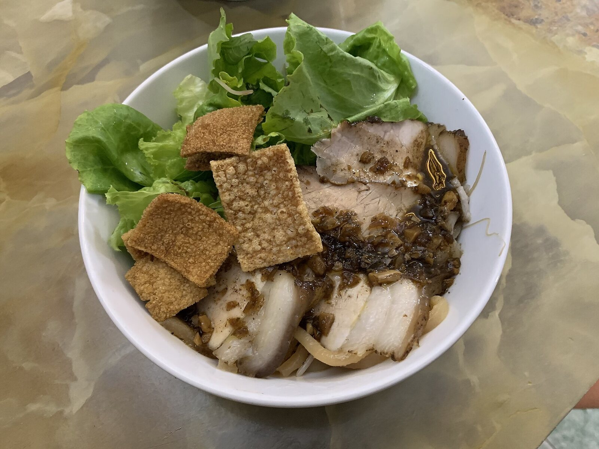
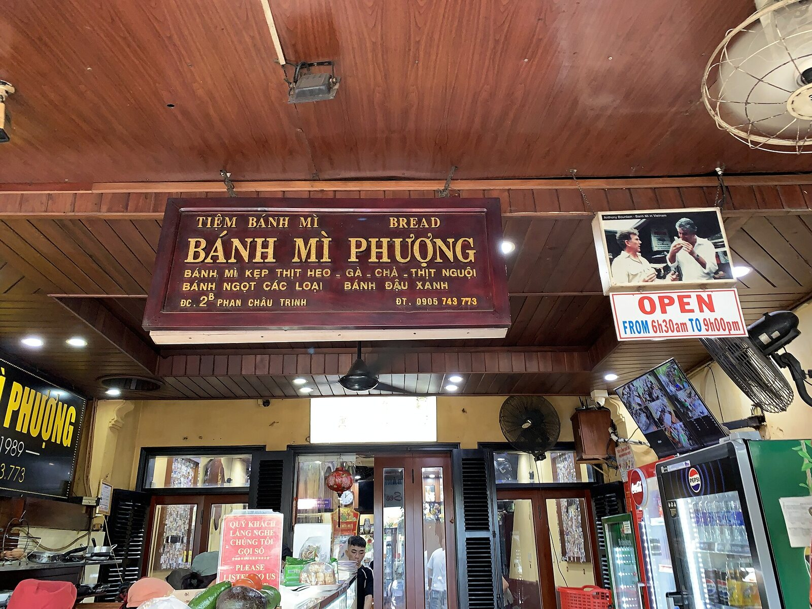

Tiếng Việt
Tiếng Việt English
English 한국어
한국어 中文
中文 Русский
Русский Deutsch
Deutsch
They say that if you want to understand a place, start with a meal. Hoi An is the clearest proof. Once a bustling trading port frequented by Japanese, Chinese and European merchants, Hoi An has kept layers of cultural exchange in its cuisine for hundreds of years. This article introduces ten dishes you should try, how to enjoy them the local way, and the dining experiences right inside CGP Luxury Hotel.
What makes Hoi An food special?
Hoi An cuisine is not elaborate, but refined down to every detail. Three things give it its own flavour: local ingredients, cultural exchange and the habit of eating with fresh herbs.
Tra Que herbs
Herbs from Tra Que village are grown with lagoon seaweed, giving them an intense aroma and a unique sweetness. Almost every Hoi An dish comes with fresh herbs.
Cultural exchange
Cao lau noodles, white rose dumplings and wontons all bear the mark of foreign merchants who once lived in the old port.
Family recipes
Many famous eateries keep recipes handed down through generations, cook the old way and only sell at certain hours.
Friendly prices
Most street food is very affordable, so you can try many dishes in a single day.
10 dishes to try
1. Cao lau
If you can only try one dish in Hoi An, make it cao lau. The golden-brown noodles are chewy and slightly crisp, made the traditional way with well water and wood ash. A bowl of cao lau has noodles, thinly sliced char siu pork, crispy pork crackling, blanched bean sprouts, Tra Que herbs and a little rich sauce. Unlike a noodle soup, cao lau has very little broth; you toss everything together before eating.

Photo: Chainwit. / Wikimedia Commons, CC BY 4.0 Photo: Christophe95 / Wikimedia Commons, CC BY-SA 4.0
Photo: Christophe95 / Wikimedia Commons, CC BY-SA 4.02. Hoi An chicken rice
Hoi An chicken rice is different from chicken rice elsewhere. The rice is golden because it is cooked in chicken broth and turmeric, fluffy and fragrant. Free-range chicken is poached just right, shredded and tossed with onion, Vietnamese coriander and seasoning. It is served with pickles, a small bowl of broth and a little chilli paste. This dish is also on the CGP restaurant menu, so you can enjoy it right at the hotel.

3. Mi Quang
Mi Quang is the signature dish of the whole Quang region. The wide, flat noodles are white or yellow, served with a little rich broth made from shrimp, pork, chicken or snakehead fish. It is topped with roasted peanuts and eaten with crumbled grilled rice crackers and fresh herbs. Mi Quang is usually served with just enough broth to soak the noodles.
 Photo: Chainwit. / Wikimedia Commons, CC BY 4.0
Photo: Chainwit. / Wikimedia Commons, CC BY 4.0
4. Banh mi
Hoi An banh mi is world famous, with a crackling crust, soft crumb and generous fillings: pâté, cold cuts, grilled pork, egg, herbs and each shop's special sauce. Some banh mi shops in the old town always have long queues of visitors. Try it at least once, and don't hesitate to ask the seller about their special fillings.

Photo: Chainwit. / Wikimedia Commons, CC BY 4.05. White rose dumplings
Known as "white roses", these dumplings are made of translucent rice dough filled with shrimp or pork and folded into the shape of a small flower. They are steamed, sprinkled with crispy fried shallots and dipped in sweet and sour fish sauce. Light and delicate, they make a perfect lunch.
 Photo: Chainwit. / Wikimedia Commons, CC BY 4.0
Photo: Chainwit. / Wikimedia Commons, CC BY 4.0
6. Wontons
Hoi An wontons come in two styles: in soup and fried. Fried wontons are crunchy and topped with a sweet and sour sauce of shrimp, pork and vegetables. They are a much-loved evening snack.
7. Banh xeo and mustard-leaf rolls
Central Vietnamese banh xeo are smaller than the southern version, with a crispy shell filled with shrimp, pork and bean sprouts. Wrap them in rice paper with fresh herbs and dip them in a rich peanut sauce. Ram cuon cai are small spring rolls wrapped in green mustard leaves, dipped in sweet and sour fish sauce.
8. Cam Nam corn pudding
Corn from Cam Nam village is sweet and sticky, cooked into a sweet soup with rich coconut milk. A cool bowl of corn pudding by the Hoai River in the evening is a true Hoi An experience.
9. Cau Mong roast veal
Golden roasted veal, thinly sliced and rolled in rice paper with fresh herbs, green banana and star fruit, dipped in fermented anchovy sauce or soy-based sauce. It is often enjoyed over drinks or at lunch with friends.
10. Nuoc mot and herbal drinks
In the old town you will see many stalls selling nuoc mot, a herbal drink made from lime leaves, lemongrass, cinnamon and fruit, very refreshing. It is the ideal thirst-quencher after hours of walking in the sun.
Where and when to eat
Hoi An food has its own rhythm through the day. Knowing what to eat and when will give you the best meals.
- Early morning
Mi Quang, banh mi, coffee
Many mi Quang and banh mi shops open early. If you stay at CGP, the hotel breakfast is plenty, but a banh mi on the go while cycling is great fun too.
- Lunchtime
Chicken rice, cao lau, white rose dumplings
This is when chicken rice and cao lau shops are busiest. Arrive a little early to avoid waiting.
- Afternoon
Sweet soups, nuoc mot, cakes
Afternoon is snack time: corn pudding, bean pudding, banh it la gai or a cold glass of nuoc mot.
- Evening
Night market and riverside eateries
In the evening, snack carts line the riverbank and the night market. Try grilled rice paper, fried wontons and grilled seafood.
 Photo: Alexkom000 / Wikimedia Commons, CC BY 4.0
Photo: Alexkom000 / Wikimedia Commons, CC BY 4.0Dining at CGP Luxury Hotel
After a day exploring street food, sometimes you just want a good, clean and quiet meal at the hotel. CGP Luxury Hotel offers plenty of ways to enjoy Vietnamese flavours without going out.
Floating breakfast by the pool
A rattan tray of pastries, fresh fruit and watermelon juice is floated right on the hotel pool. It is the experience couples love most and a stunning photo backdrop. Please book with reception at least one day ahead so the kitchen can prepare.


Breakfast buffet at the restaurant
The hotel restaurant is on the ground floor, with a cool green ceiling, yellow rattan chairs and vivid oil paintings. Every morning the buffet offers toast, eggs, sausages, cold cuts, fresh vegetables, seasonal fruit such as watermelon, dragon fruit and mango, along with orange and watermelon juice, coffee and tea. Please tell reception when booking or checking in if you would like the breakfast buffet.
Vietnamese and Western dishes
The CGP kitchen serves both Vietnamese and Western dishes, at a poolside table or in the restaurant: golden Hoi An chicken rice, a tray of rice vermicelli with fresh herbs and rich dipping sauce, crispy fried pastries, a hot fried-egg baguette and sandwiches with fries for a light meal. The menu can be adjusted to your taste or diet; just let us know when ordering.


Garden café
Under the green pergola by the pool, the garden café serves Vietnamese coffee, orange and watermelon juice, fruit tea and light bites. It is the perfect spot to read in the afternoon or chat with friends.
Eating tips for visitors
Ask the price before orderingAt places without a clear price list, ask first to avoid misunderstandings. Most vendors in Hoi An are very friendly and happy to explain.
Try many dishes, a little of eachStreet food is cheap, so order several small dishes to share with your companion. This way you taste more flavours in one trip.
Be careful with allergiesMany dishes contain peanuts, shrimp or fish sauce. If you have an allergy, tell the vendor or ask hotel reception to write a note card in Vietnamese for you.
If you don't know where to start, ask the CGP front desk. Our team are locals who know the good places where residents eat, and are happy to mark them on your map.
Frequently asked questions
What is the difference between cao lau and mi Quang?
Cao lau has chewy golden-brown noodles served with char siu pork and crackling, with very little broth. Mi Quang has wide flat noodles with more broth, served with peanuts and grilled rice crackers.
Does the hotel serve vegetarian food?
Yes. The CGP kitchen can adapt dishes for vegetarians or special requests. Please let us know when ordering.
How far ahead should I book the floating breakfast?
Please book with reception at least one day ahead.
Do the stay packages include meals?
All stay packages include daily breakfast. Depending on the package, dinner or afternoon tea may be included; details are on each package page.
Taste Hoi An to the full
At CGP Luxury Hotel you can enjoy a floating breakfast by the pool and still be just minutes by bike from the best eateries in the old town.